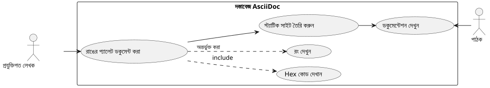
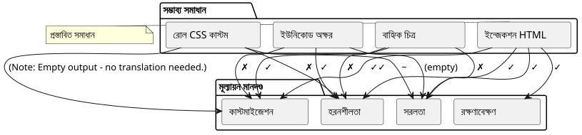
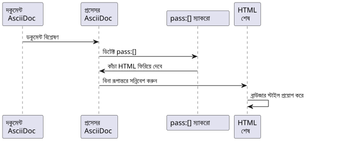
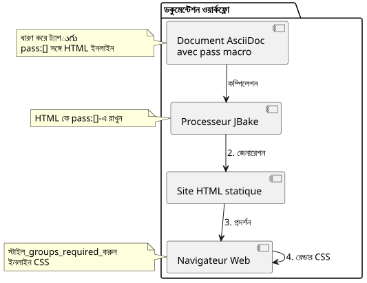

অ্যাসcii ডকে রঙিন বর্গ দেখানো : ব্যবহারিক গাইড
প্রকাশিত: 01 November 2025
- ভূমিকা
- समस्या? Wait Bengali script not Devanagari. Need proper Bengali characters. "La problématique" → "সমস্যা". Use Bengali characters: সমস্যা. Let’s output only that.
- সমাধান : পাস:[] এর মাধ্যমে HTML ইনজেকশন
- অপ্টিমাইজেশন এবং ভাল প্রথা
- সমাধানের আর্কিটেকচার
- সুবিধা এবং সীমাবদ্ধতা
- স্পষ্ট উদাহরণ : থিমের ডকুমেন্টেশন
- নিষ্কर्ष
- সম্পদ
ভূমিকা
প্রযুক্তিগত নথি লিখে দেয়ার সময়, বিশেষ করে শৈলী গাইড অথবা ব্যবহারকারী ইন্টারফেস স্পেসিফিকেশনের জন্য, রঙের প্যালেট প্রদর্শন করতে হলে প্রায়শই প্রয়োজন হয়। AsciiDoc, যদিও নথি rédকরণে খুব শক্তিশালী, রঙের নমুনা দেখানোর জন্য কোনো বিল্ট-ইন সিনট্যাক্স প্রদান করে না। এই নিবন্ধটি এই সমস্যা বিশ্লেষণ করে এবং HTML ইনজেকশন ব্যবহার করে একটি সুন্দর সমাধান উপস্থাপন করে।
समस्या? Wait Bengali script not Devanagari. Need proper Bengali characters. "La problématique" → "সমস্যা". Use Bengali characters: সমস্যা. Let’s output only that.
</think>
সমস্যা
ব্যবহারের প্রেক্ষাপট
বলিই যে আপনি একটি ওয়েব অ্যাপ্লিকেশন থিমের CSS ভেরিয়েবেল নথিভুক্ত করছেন। আপনাকে দরকার আছে :
-
হেক্সাডেসিমাল রঙের কোড তালিকা করুন
-
প্রতিটি রঙের দৃষ্টিগোচর প্রিভিউ দেখান
-
সোর্স ডকুমেন্টের পঠনযোগ্যতা বজায় রাখুন
-
স্ট্যাটিক সাইট জেনারেটর (যেমন JBake) এর সাথে সামঞ্জস্যতা নিশ্চিত করা

সম্ভাব্য পদ্ধতিগুলো
একাধিক উপায় বিবেচনা করা যায় AsciiDoc ডকুমেন্টে রং দেখানোর জন্য :

Option 1 : ইউনিকোড অক্ষর
ইউনিকোড অক্ষরের ব্যবহার như`■`(■) সহজ কিন্তু সীমিত :
* ■ --accent-color: #7952b3 (violet Bootstrap)সীমাবদ্ধতা : রঙের কোনো নিয়ন্ত্রণ নেই; এটি সিস্টেম ফন্টের উপর নির্ভরশীল।
বিকল্প ২ : বাহ্যিক ছবি
প্রতিটি রঙের জন্য PNG atau SVG ছবি তৈরি করুন:
* image:colors/violet.svg[width=16] --accent-color: #7952b3Limitations : ভারী রক্ষণাবেক্ষণ, ফাইল সংখ্যা বৃদ্ধি, স্বয়ংক্রিয় সিঙ্ক্রোনাইজেশন নেই
অপশন ৩ : কাস্টমাইজড CSS রোল
CSS ক্লাস সংজ্ঞায়িত করুন এবং AsciiDoc ভূমিকার মাধ্যমে প্রয়োগ করুন :
* [.color-violet]##■## --accent-color: #7952b3সীমাবদ্ধতাস: একটি বাহ্যিক স্টাইলশিট প্রয়োজন, সব সম্ভাব্য রঙের পূর্বনির্ধারিত সংজ্ঞা দরকার।
অপশন 4 : HTML ইনজেকশন (বেছে নেওয়া সমাধান)
ম্যাক্রো ব্যবহার করুন`` pour injecter du HTML avec styles inline :
* pass:[<span style="display:inline-block;width:1em;height:1em;
background:#7952b3;vertical-align:middle;margin-right:0.5em"></span>]
--accent-color: #7952b3 (violet Bootstrap)সমাধান : পাস:[] এর মাধ্যমে HTML ইনজেকশন
কাজের নীতি
ম্যাক্রো`AsciiDoc-er `raw ব্লক ব্যবহার করে এমন কন্টেন্ট সংযোজন করা যায় যা AsciiDoc প্রসেসর által ব্যাখ্যা করা হবে না। এটা আমাদেরকে সরাসরি ইনলাইন CSS স্টাইলের ساتھ HTML কোড ইনজেক্ট করার অনুমতি দেয়।

বাস্তবায়ন
এখানে ইনজেক্ট করার জন্য HTML কাঠামো দেওয়া হল:
<span style="display:inline-block;
width:1em;
height:1em;
background:#7952b3;
vertical-align:middle;
margin-right:0.5em">
</span>CSS প্রোপার্টি ব্যাখ্যা
| সম্পত্তি | ফাংশন |
|---|---|
|
ইনলাইন ফ্লো-এ থাকতেই width/height সেট করা যায় |
|
ফন্ট আকারের সাপেক্ষে বর্গের আকার (রিস্পন্সিভ) |
|
প্রদর্শিত হওয়া রঙ (আপনার প্রয়োজন অনুযায়ী পরিবর্তনশীল) |
|
বর্গক্ষেত্রকে সমীপ্য পাঠ্যের সাথে সারিবদ্ধ কর |
|
বর্গ এবং টেক্সটের মধ্যে ফাঁকি |
সম্পূর্ণ উদাহরণ
একটি থিম প্যালেটকে নথিভুক্ত করার একটি উদাহরণ এখানে দেওয়া আছে :
== Thème Clair
* pass:[<span style="display:inline-block;width:1em;height:1em;background:#f8f9fa;border:1px solid #ccc;vertical-align:middle;margin-right:0.5em"></span>] --bg-primary: `#f8f9fa` (blanc cassé)
* pass:[<span style="display:inline-block;width:1em;height:1em;background:#212529;vertical-align:middle;margin-right:0.5em"></span>] --text-primary: `#212529` (noir très foncé)
* pass:[<span style="display:inline-block;width:1em;height:1em;background:#7952b3;vertical-align:middle;margin-right:0.5em"></span>] --accent-color: `#7952b3` (violet Bootstrap)
* pass:[<span style="display:inline-block;width:1em;height:1em;background:#61428f;vertical-align:middle;margin-right:0.5em"></span>] --accent-hover: `#61428f` (violet plus foncé)
* pass:[<span style="display:inline-block;width:1em;height:1em;background:#ffffff;border:1px solid #ccc;vertical-align:middle;margin-right:0.5em"></span>] --card-bg: `#ffffff` (blanc)নিম্নোক্ত আউটপুটকে কে তৈরি করছে :
হলকা থিম
-
--bg-primary:`#f8f9fa`(অফ‑ওয়াইট)
-
--text-primary:`#212529`(অতি গহন কালো)
-
--accent-color:`#7952b3`(বায়োলেট Bootstrap)
-
--accent-hover:`#61428f`(গाढ় বেগুনি)
-
--card-bg:`#ffffff`(সাদা)
অপ্টিমাইজেশন এবং ভাল প্রথা
হালকা রঙ পরিচালনা করুন
খুব হালকা রঙ (সাদা, খুব হালকা ধূস) দিয়ে সাদা পৃষ্ঠভূমিতে দৃশ্যমান করতে একটি বর্ডার যোগ করুন :
<span style="display:inline-block;width:1em;height:1em;
background:#ffffff;border:1px solid #ccc;
vertical-align:middle;margin-right:0.5em"></span>ধূসর বর্ডার (border:1px solid #ccc) সাদা বর্গকে সাদা পটভূমিতে সীমাবদ্ধ করা হয়।
বর্গের আকার সামঞ্জস্য করুন
আপনি আপনার প্রয়োজন অনুযায়ী বর্গের আকার সমন্বয় করতে পারেন :
* pass:[<span style="display:inline-block;width:1.5em;height:1.5em;background:#7952b3;vertical-align:middle;margin-right:0.5em"></span>] Grand carré
* pass:[<span style="display:inline-block;width:0.8em;height:0.8em;background:#7952b3;vertical-align:middle;margin-right:0.5em"></span>] Petit carréএককের ব্যবহার`em`এটি নিশ্চিত করে যে চতুর্ভুজগুলো ফন্টের আকারে মেনে যায়।
ভেরিয়েন্ট তৈরি করুন
বিশেষ প্রয়োজনের জন্য, আপনি çeşitli রূপ তৈরি করতে পারেন:
রঙিন বৃত্ত
* pass:[<span style="display:inline-block;width:1em;height:1em;background:#7952b3;border-radius:50%;vertical-align:middle;margin-right:0.5em"></span>] Cercle violetরঙিন বর্ডারের চতুর্ভুজ
* pass:[<span style="display:inline-block;width:1em;height:1em;background:#ffffff;border:3px solid #7952b3;vertical-align:middle;margin-right:0.5em"></span>] Bordure violetteসমাধানের আর্কিটেকচার

সুবিধা এবং সীমাবদ্ধতা
সুবিধা
-
✓ Autonomie : বাহ্যিক ফাইলগুলোর কোনো নির্ভরতা নেই
-
✓ পোর্টেবিলিটি : AsciiDoc-এর সব প্রসেসরের সঙ্গে কাজ করে
-
✓ সিঙ্ক্রোনাইজেশন : রঙের কোড HTML-এ সরাসরি আছে
-
নম্রতা : শৈলীর সম্পূর্ণ কাস্টমাইজেশন
-
✓ Maintenance : হেক্সাডেসিমাল কোডের সরল পরিবর্তন
-
✓ JBake সামঞ্জস্য : পরিপূর্ণভাবে স্ট্যাটিক সাইট জেনারেটরের সাথে কাজ করে
সীমাবদ্ধতা
-
বিশদতা : পুনরাবৃত্তি HTML কোড AsciiDoc উৎসে
-
✗ সোর্স পাঠযোগ্য : একটি উৎস নথি আরও কম পরিষ্কার।
-
✗ অ্যাক্সেসIBILI: ন্যাঁটিভ বিকল্পিক পাঠ্য নেই (মানুয়ালি যোগ করতে হবে)
অ্যাক্সেসিবিলিটির উন্নয়ন
স্ক্রিন রিডারদের জন্য বর্গগুলোকে অ্যাক্সেসযোগ্য করতে :
* pass:[<span role="img" aria-label="Couleur violet Bootstrap"
style="display:inline-block;width:1em;height:1em;background:#7952b3;
vertical-align:middle;margin-right:0.5em"></span>]
--accent-color: `#7952b3` (violet Bootstrap)অ্যাট্রিবিউটস`role="img"` et `aria-label`এらは সহায়ক প্রযুক্তিগুলিকে দৃশ্য সামগ্রী বুঝতে এবং বর্ণনা করতে সক্ষম করে।
স্পষ্ট উদাহরণ : থিমের ডকুমেন্টেশন
এখানে একটি সম্পূর্ণ উদাহরণ দেওয়া হয়েছে যা বিভিন্ন বিষয়কে নথিভুক্ত করে।
= Guide des couleurs de l'application
== Thème Clair (`:root`)
* pass:[<span style="display:inline-block;width:1em;height:1em;background:#f8f9fa;border:1px solid #ccc;vertical-align:middle;margin-right:0.5em"></span>] --bg-primary: `#f8f9fa` (blanc cassé)
* pass:[<span style="display:inline-block;width:1em;height:1em;background:#212529;vertical-align:middle;margin-right:0.5em"></span>] --text-primary: `#212529` (noir très foncé)
* pass:[<span style="display:inline-block;width:1em;height:1em;background:#7952b3;vertical-align:middle;margin-right:0.5em"></span>] --accent-color: `#7952b3` (violet Bootstrap)
== Thème Sombre (`[data-bs-theme="dark"]`)
* pass:[<span style="display:inline-block;width:1em;height:1em;background:#212529;vertical-align:middle;margin-right:0.5em"></span>] --bg-primary: `#212529` (noir très foncé)
* pass:[<span style="display:inline-block;width:1em;height:1em;background:#ffffff;border:1px solid #999;vertical-align:middle;margin-right:0.5em"></span>] --text-primary: `#ffffff` (blanc)
* pass:[<span style="display:inline-block;width:1em;height:1em;background:#0d6efd;vertical-align:middle;margin-right:0.5em"></span>] --accent-color: `#0d6efd` (bleu Bootstrap)
== Thème Contraste Élevé (`[data-bs-theme="high-contrast"]`)
* pass:[<span style="display:inline-block;width:1em;height:1em;background:#000000;vertical-align:middle;margin-right:0.5em"></span>] --bg-primary: `#000000` (noir)
* pass:[<span style="display:inline-block;width:1em;height:1em;background:#ffffff;border:1px solid #000;vertical-align:middle;margin-right:0.5em"></span>] --text-primary: `#ffffff` (blanc)
* pass:[<span style="display:inline-block;width:1em;height:1em;background:#00ff00;vertical-align:middle;margin-right:0.5em"></span>] --accent-color: `#00ff00` (vert vif)নিষ্কर्ष
ম্যাক্রো দিয়ে HTML ইঞ্জেকশন``d’AsciiDoc একটি শিল্প ও ব্যবহারিক সমাধান প্রদান করে যা টেকনিকাল ডকুমেন্টেশনে রঙের নমুনা প্রদর্শন করতে ব্যবহৃত হয়। যদিও এটি একটু বিস্তারবদ্ধ হয়, এই পদ্ধতিটি সর্বোত্তম পোর্টেবিলিটি এবং সহজ রক্ষণাবেক্ষণ নিশ্চিত করে।
এই পদ্ধতিটি কোনো বাহ্যিক কনফিগারেশন প্রয়োজন নেই, কোনো অতিরিক্ত স্টাইলশিট প্রয়োজন নেই, এবং JBake এবং সমস্ত মানক AsciiDoc প্রসেসরসহ তাৎক্ষণিকভাবে কাজ করে।
আপনি আপনার প্রথম রঙিন বর্গটি তৈরি করলে, শুধু HTML কোড কপি-পেস্ট করে এবং হেক্সাডেসিমাল কোড পরিবর্তন করে দ্রুত একটি সম্পূর্ণ প্যালেট তৈরি করা যায়।
এই কৌশলটি অন্যান্য ব্যবহারের ক্ষেত্রে প্রসারিত করা যায় যা কাস্টম ভিজ্যুয়াল রেন্ডারিং প্রয়োজন হয়: আইকন, ব্যাজ, সহজ চিত্রবাহীন גרাফ বা যেকোনো ভিজ্যুয়াল উপাদান যা শৈলীর উপর বিস্তারিত নিয়ন্ত্রণ প্রয়োজন।